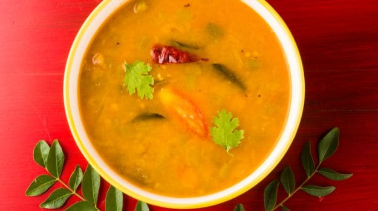

Sambhar

What is Sambhar?
Sambar is a lentil-based vegetable stew, cooked with pigeon pea and
tamarind broth. It is popular in South Indian and Sri Lankan cuisines. The stew has been adapted into Burmese
cuisine as a popular accompaniment to Burmese curries.
What are the ingredients required to make it?
- 1/3 cup Toor Dal (split pigeon peas)
- 1/4 teaspoon Turmeric Powder
- 1 cup chopped Mixed Vegetables
- 1/2 teaspoon Mustard Seeds
- 5-6 Curry Leaves
- 1-2 Dry Red Chillies
- A pinch of Asafoetida
- 1 medium Onion, finely chopped (approx. 1/3 cup)
- 1 tablespoon Sambar Powder
- 1/2 tablespoon Seedless Tamarind
- 1 Tomato, finely chopped (approx. 1/3 cup)
- 1 tablespoon Oil
- 1 cup + 1½ cups Water
- 1 tablespoon finely chopped Coriander Leaves
- Salt to taste
How is it made?
- Soak 1/2 tablespoon tamarind in 3-tablespoons of hot water for 10-15 minutes
- Mash it with a spoon and strain it using a sieve and discard the solids.
- Add toor dal, turmeric powder and 1 cup water in 3-4 liters capacity steel or aluminum pressure cooker.
- For this recipe we used 1/4 cup potato, 1/4 cup brinjal, 1/4 cup carrot and 1/4 cup French beans as mixed
vegetables.
- Add mixed vegetables in a small container, place it inside the pressure cooker and close the cooker lid.
- Pressure cook over medium flame for 3-4 whistles.
- Turn off the flame and allow it to stand until pressure comes down naturally.
- Open the lid, remove the container of vegetables and mash the dal using spatula or immersion blender.
- Heat 1-tablespoon oil in a pan or kadai over medium flame.
- Add mustard seeds. When they start to splutter, add curry leaves, dry red chilies, asafoetida, and sauté for
10-15 seconds.
- Add chopped onion.
- Sauté until onion turns transparent. Add tamarind juice and cook for 2-3 minutes.
- Add chopped tomatoes
- Sauté until tomatoes turn soft. Add Sambar Powder.
- Stir and cook for a minute.
- Add cooked and mashed dal, boiled vegetables, 1½ cups water and salt.
- Mix well and boil until it turns frothy; it will take around 5-7 minutes.
- Turn off the flame. Transfer spicy Sambar into a serving bowl and garnish with finely chopped coriander
leaves.
Serve it as an accompaniment with Idli, Vada, Dosa and Kara Pongal in the breakfast of in South Indian Meal or
just enjoy it as a soup.